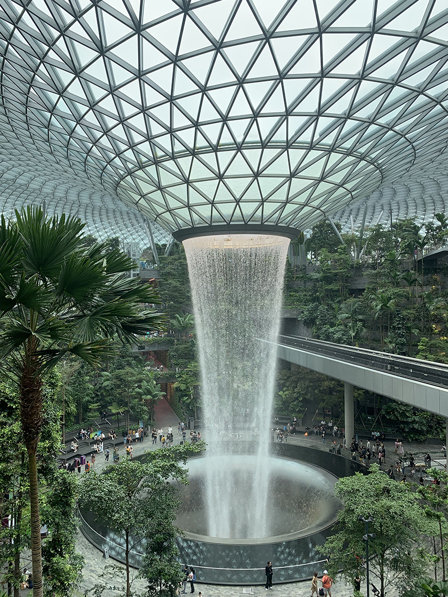
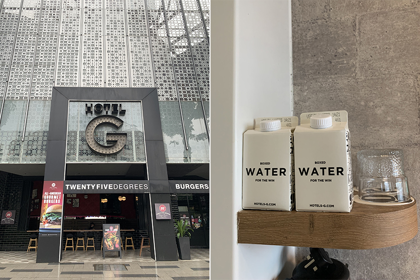
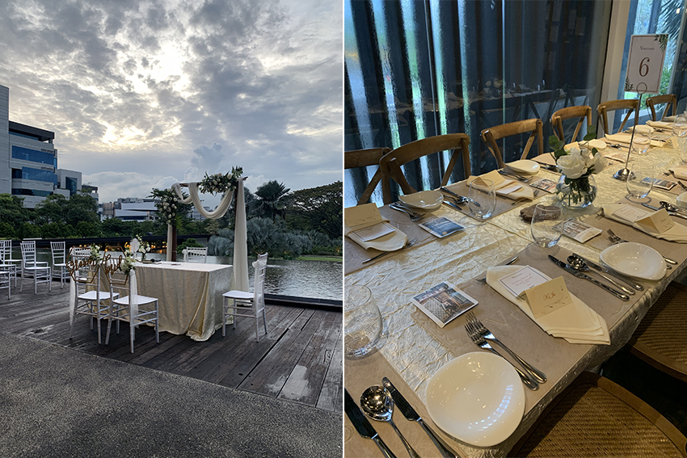
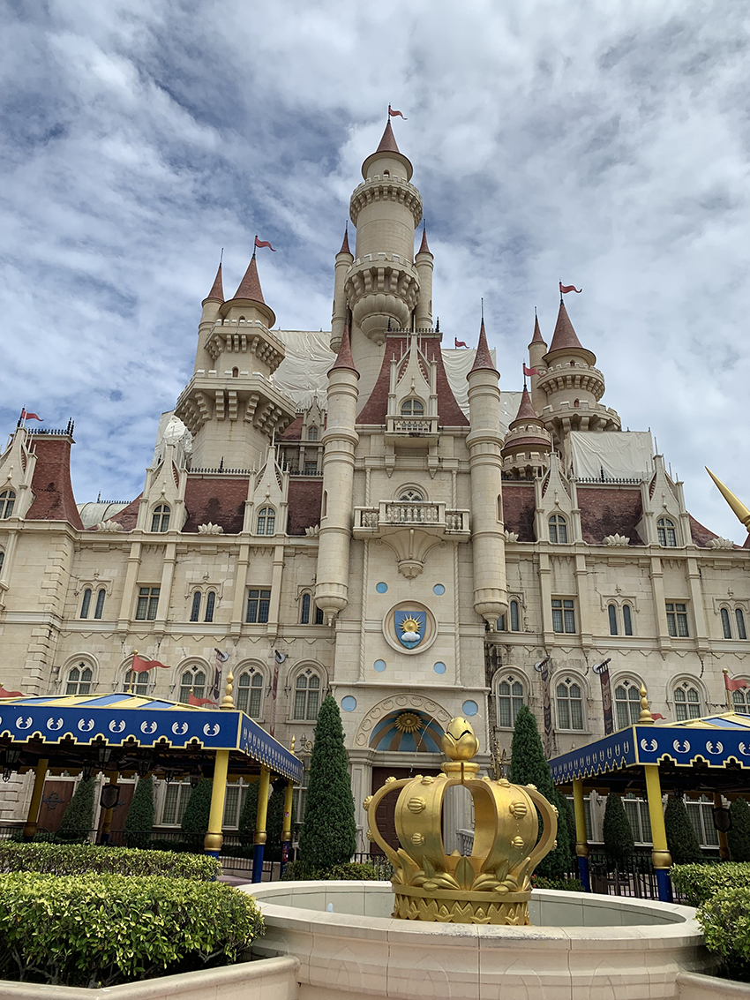
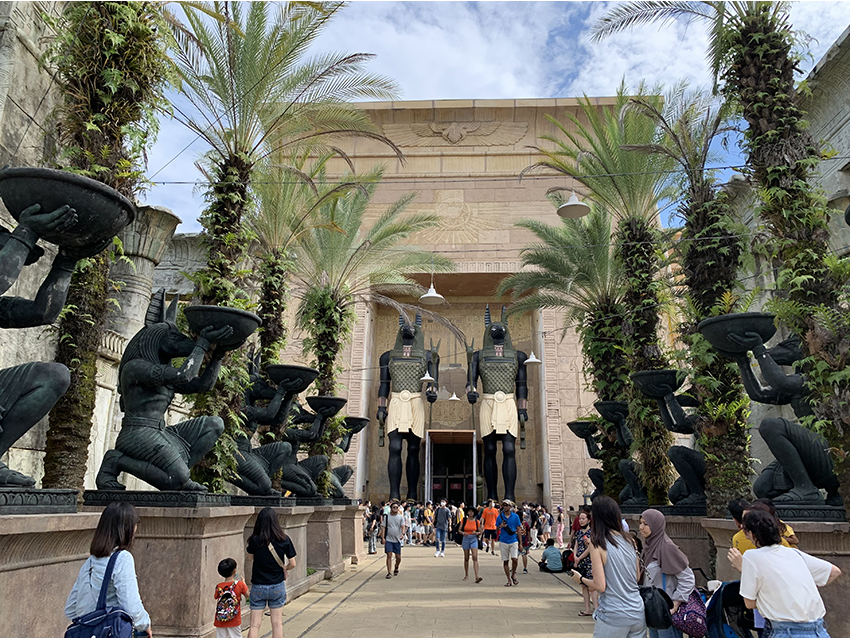
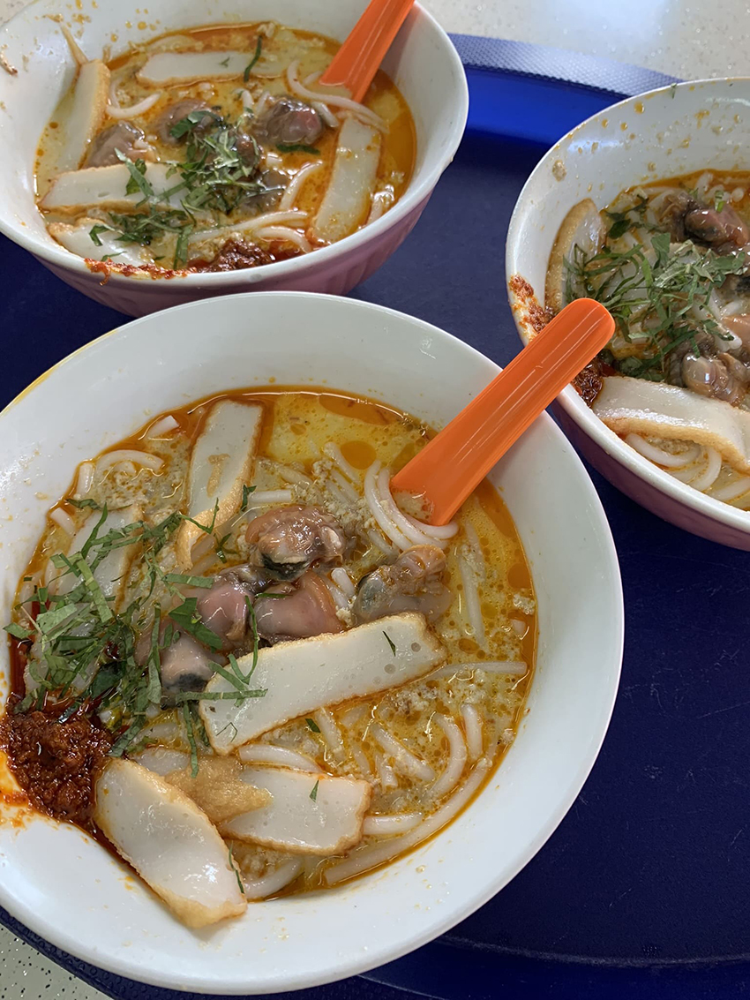
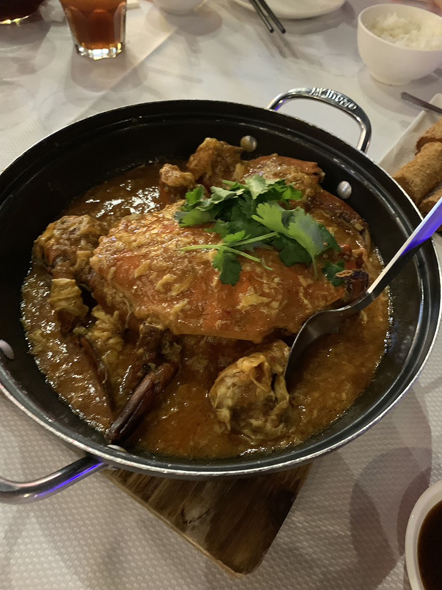
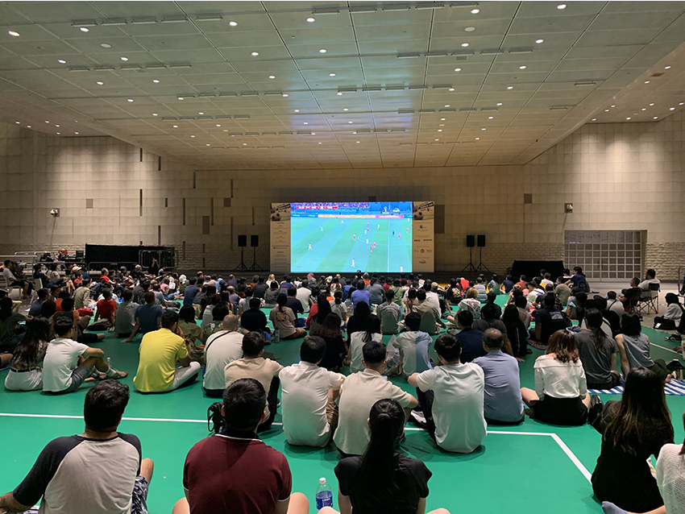

睽違已久！終於等到各國大門開啟，拿出塵封已久的護照，距離上次出國已是三年前了！這次選擇新加坡為出發點，雖然六年前已來過，但此次主要原因是參加朋友的婚禮，原本還在猶豫是否該前往參加，無意間卻發現酷航特價優惠，來回機票不到一萬元，怎還有理由拒絕呢？有人說新加坡又小又無聊，但這次還是捨棄好多地方沒去成，我肯定還會去第三次的！
除了訂機票及飯店外，別忘了查詢新加坡入境規定，在出發的三天前需先申請新加坡電子入境卡並上傳數位新冠病毒健康證明，可減少許多等待時間。
台北飛行到新加坡約五小時，抵達新加坡樟宜機場後，首先去造訪2019年新開幕的星耀樟宜。裡頭設有花園、餐廳、旅館及逛不完的商店，其中最吸引人的是世界最高的室內瀑布雨漩渦。若不是趕著要去參加婚禮，星耀樟宜可是能花一整天待著。
|  | |
| 非常壯觀的室內瀑布雨漩渦（Rain Vortex） |
新加坡的交通跟台北一樣便利，拎著行李搭地鐵至明古連，步行兩分鐘即可到下塌飯店Hotel G Singapore。住的飯店具有獨特風格設計且平價，不僅鄰近地鐵站、周遭機能也很方便。稍作整理後，選擇搭公車的方式前往Vineyard法國餐廳。
|  | |
| 風格獨特的飯店 | 包裝很可愛的水 |
參加的是一場小而精緻的婚禮，在戶外證婚親耳聽到新加坡式英語覺得非常新奇。觀禮儀式後進到屋內入座，餐點是個人套餐，只需決定主餐要選擇牛排或是魚排，之後每道餐點都有專人一一送上。整場婚禮最有趣的是新加坡習俗，主持人會說一段祝賀的話語，到最後一個字時，全體會一同拉長音，氣越長代表新人接收到的祝福會越長久，最後再一同乾杯。
|  | |
| 浪漫的戶外婚禮 | 找到自己的專屬位置入座 |
來到新加坡，怎能不去環球影城呢！相較於其他國家的遊樂園，通常一天只能玩兩到三個設施，大部分的時間都花在排隊上。但新加坡是唯一可以一日暢遊園內各項設施的樂園。不僅遊樂設施能都玩一輪，連人物角色見面會也都能拍到合照。最熱門的兩項雲霄飛車，前後花不到十分鐘就連續玩兩趟呢！
|  | |
| 不用人擠人的城堡格外賞心悅目 | |
|  | |
| 唯一排隊最久的古埃及 |
新加坡美食最念念不完的就是結霜橋叻沙，此次去攤位面前已拉起了排隊圍欄，可見這幾年美食地位仍屹立不搖。更令人驚訝的是價錢依舊不變！味道也和當年品嘗到的一模一樣，好吃到讚嘆不已！
|  | |
| 最好吃的叻沙 |
另一道新加坡必吃的辣椒螃蟹：珍寶海鮮，此家餐廳是最受歡迎的連鎖餐廳之一，在台灣也有分店。我們預訂了在克拉克碼頭邊的河畔店，夜晚坐在戶外吹著徐徐涼風，一邊欣賞河邊美景，一邊吃著美食，好不愜意。除了必點的辣椒螃蟹，麥片蝦也非常推薦喔！
|  |
此趟旅程恰巧是世足的季軍賽，位於國家圖書館的一樓廣場有設置大螢幕免費放映，大家齊聚一同觀賽的氛圍比自己在家觀賞來的精采多了！
|  | |
| 更多的美食及景點，就等著我下回再來探索吧！ |